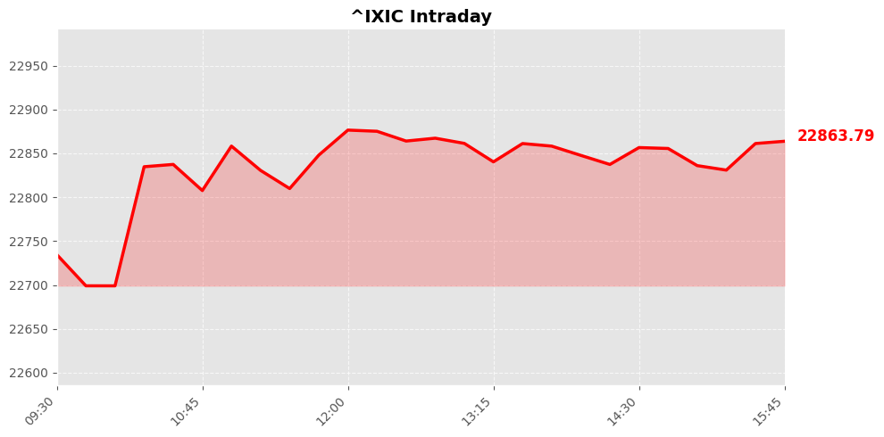
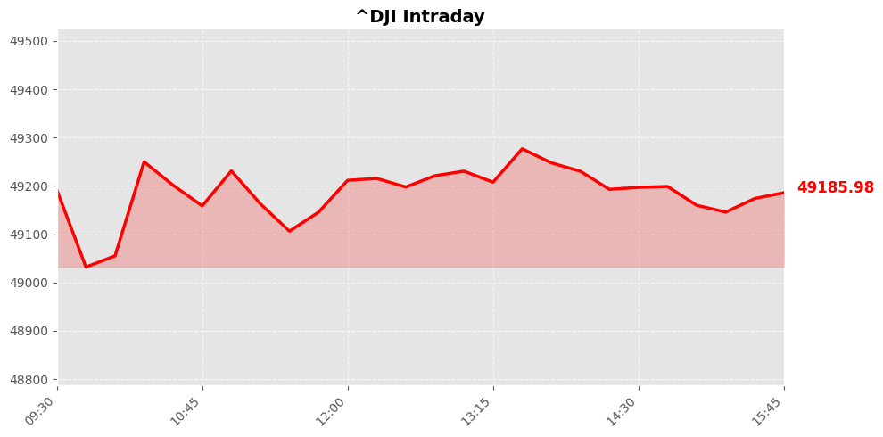
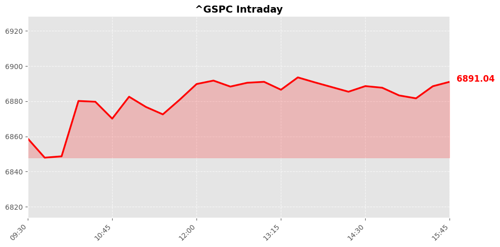

Daily Market Briefing
Market Overview



Market Analysis
The recent market performance reflects a positive sentiment across major U.S. equity indices, with all three benchmarks closing higher. The NASDAQ Composite led the gains, rising over 1%, which suggests strong investor confidence in technology and growth sectors. The index’s increase of approximately 236 points to a robust rally, likely driven by continued optimism around technological innovation, earnings growth, or favorable macroeconomic indicators.
Meanwhile, the Dow Jones Industrial Average and the S&P 500 also posted solid gains, with increases of around 0.76% and 0.77%, respectively. These gains indicate broad-based strength across sectors, possibly supported by resilient economic data, easing inflation fears, or positive corporate earnings reports. The Dow’s rise of over 370 points underscores investor appetite for stability and value-oriented assets, while the S&P’s gains reflect a balanced confidence across various sectors, including financials, healthcare, and consumer discretionary.
Market sentiment appears cautiously optimistic, possibly driven by easing geopolitical tensions or favorable monetary policy signals from the Federal Reserve. Investors seem to be responding positively to macroeconomic indicators that suggest ongoing economic resilience, despite potential headwinds such as inflation concerns or geopolitical uncertainties. The synchronized rally across indices underscores a risk-on environment, where investors are willing to embrace growth opportunities.
Overall, the market's upward trajectory highlights investor confidence in the current economic outlook, supported by strong corporate earnings and supportive monetary conditions. However, ongoing geopolitical and macroeconomic risks warrant cautious optimism, and market participants should remain vigilant for potential volatility ahead.
Today's Headlines
News Analysis
Market Focus Points Today:
-
U.S. Political and Fiscal Developments:
The upcoming announcement by President Trump regarding new tax cuts, potentially through budget reconciliation, garners significant attention. However, legislative progress faces hurdles due to the reduced margin in the House of Representatives under Speaker Mike Johnson. This political dynamic introduces uncertainty around fiscal policy trajectories, which can influence market sentiment, especially in sectors sensitive to tax and regulatory changes. -
Energy Markets and Geopolitical Risks:
Oil prices have experienced a slight decline, but geopolitical tensions persist, particularly with U.S.-Iran nuclear negotiations and the upcoming OPEC+ meeting. The outcome of these talks—expected later this week—could cause volatility in crude prices, impacting energy equities and commodities markets. -
Corporate Earnings and Consumer Trends:
Cava’s surprise in same-store sales growth driven by menu pricing indicates resilient consumer spending amidst a K-shaped economic recovery. Meanwhile, Constellation Energy’s stock rally, despite postponed guidance, reflects investor confidence in the utility and energy sectors. Conversely, Microsoft’s approaching technical support levels signal caution for tech investors, as its stock nears a critical long-term support zone. -
Sector Rotation and Market Sentiment:
Recent shifts show consumer staples, traditionally viewed as safe havens, becoming riskier bets amid AI-driven market jitters. This signals a potential sector rotation where investors seek growth opportunities but also face increased volatility and valuation risks. -
M&A and Strategic Moves in Tech:
AMD’s decision to relinquish equity stakes in deals with Meta and OpenAI, contrasted with Nvidia’s strong market position, underscores ongoing strategic competition. Nvidia remains dominant in AI, reinforcing its status as a market leader amidst a crowded tech landscape.
Potential Market Impact Factors:
-
Fiscal Policy Uncertainty:
The legislative challenges around tax cuts could introduce volatility, especially if markets interpret delays or setbacks as signs of political gridlock. Conversely, clear signals of policy progression could boost risk appetite. -
Geopolitical Tensions:
The outcome of U.S.-Iran nuclear talks and OPEC+ decisions are likely to influence crude oil prices, affecting energy stocks and inflation expectations. Elevated geopolitical risks tend to increase market volatility. -
Sector Rotation Risks:
The shift away from traditional safe havens like consumer staples toward more volatile tech and AI-related stocks could lead to increased market swings, especially if growth expectations are not met. -
Technical and Earnings Signals:
Key technical levels for stocks like Microsoft serve as important indicators for short-term positioning. Earnings surprises or guidance updates, such as Constellation Energy’s delay, also influence sentiment.
Industry Trends Worth Noting:
-
AI and Tech Dominance:
Nvidia continues to solidify its leadership in AI, with AMD’s strategic retreat highlighting Nvidia’s competitive edge. The sector remains highly dynamic, with ongoing M&A activity and strategic partnerships shaping future growth. -
Consumer Sector Resilience:
Despite economic uncertainties, some companies like Cava demonstrate resilience through effective pricing strategies, indicating potential pockets of strength within consumer discretionary. -
Energy and Geopolitical Influence:
Oil markets remain sensitive to geopolitical developments, emphasizing the importance of energy prices as a macroeconomic indicator. -
Healthcare Insurance Disparities:
The study on Medicare and Medicare Advantage underscores ongoing shifts and disparities in healthcare coverage, which could influence healthcare stocks and policy debates.
In summary, markets are navigating a complex landscape marked by political uncertainty, geopolitical risks, sector shifts, and technological innovation. Investors should remain attentive to technical signals, policy developments, and geopolitical events that could drive volatility in the near term.
Economic Indicators
Inflation Indicators
Employment Indicators
Consumer Indicators
Community Hot Stocks
| Rank | Symbol | Mentions | Source |
|---|---|---|---|
| 1 | AMD | 132 | |
| 2 | IBM | 122 | |
| 3 | META | 112 | |
| 4 | MSFT | 76 | |
| 5 | NVDA | 65 | |
| 6 | PUMP | 53 | |
| 7 | FACT | 46 | |
| 8 | NET | 45 | |
| 9 | HIT | 44 | |
| 10 | AGI | 44 | |
| 11 | ADD | 43 | |
| 12 | CARE | 41 | |
| 13 | CRWD | 41 | |
| 14 | LUCK | 36 | |
| 15 | EDIT | 34 | |
| 16 | FAT | 33 | |
| 17 | TURN | 32 | |
| 18 | UBER | 28 | |
| 19 | VS | 28 | |
| 20 | MIND | 27 |
Market Outlook
The recent market performance illustrates a cautiously optimistic sentiment among investors, with major indices such as the NASDAQ, Dow Jones, and S&P 500 posting solid gains of 1.04%, 0.76%, and 0.77% respectively. This upward momentum suggests continued investor confidence, likely driven by the anticipation of favorable fiscal policies and corporate earnings.
Key news developments further support the positive outlook. The announcement of potential new tax cuts by the Trump administration could stimulate economic activity and corporate profitability, fueling risk appetite. Meanwhile, Cava’s surprise sales growth indicates resilient consumer spending patterns, especially as menu price hikes appear to be sustaining revenue streams. Conversely, the oil market remains volatile amid geopolitical tensions and upcoming negotiations, which could influence energy stocks and inflation expectations.
However, risks warrant attention. Microsoft’s approaching critical technical levels signals potential volatility in the tech sector, while geopolitical uncertainties surrounding U.S.-Iran nuclear talks and OPEC+ decisions could impact energy prices and market stability. The broader macroeconomic environment, including inflationary pressures and monetary policy adjustments, remains a backdrop to watch.
In the near term, the market may continue its upward trajectory, supported by positive corporate reports and policy prospects. Nevertheless, investors should remain vigilant for sudden shifts caused by geopolitical developments or macroeconomic surprises. Key focus areas include monitoring the tech sector’s technical signals, oil price movements, and any updates on fiscal policy initiatives.
Overall, a cautiously bullish stance is advisable, with an emphasis on diversification and risk management to navigate potential volatility over the coming days.
Follow Us

Scan to follow StockGate
For more US stock market insights